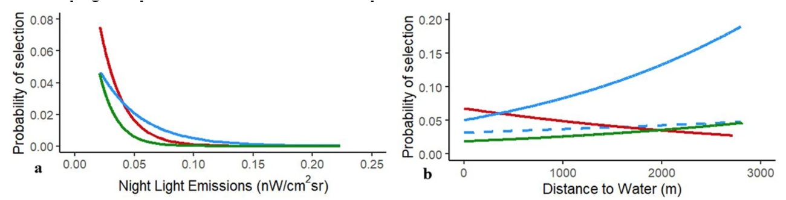

![]()
# A tibble: 1 × 5
term estimate std.error statistic p.value
<chr> <dbl> <dbl> <dbl> <dbl>
1 forest 0.568 0.111 5.11 0.000000326Interpretation
Analysis of Animal Movement Data with R 2 (together with Brian Smith)
April 20, 2026
Why interpretation can be challenging

Use-available vs presence abasence
Use available
We are comparing points that we know the animal used, with points that were available to the animal (maybe they were used maybe not, we do not know).
Presence absence
We are comparing points that we know the animal used, with points that we know the animal did not use.
Warning
For presence-absence designs, we can easily calculate a probability of use, but not for use-available designs.
What can we do instead?
- Calculate relative probability of use (RSS; Relative Selection Strength)
- Look at coefficients, or
- Use generalized linear hypothesis tests for meaningful comparisons
Relative Selection Strength (RSS)
Relative Selection Strength (RSS)
In step selection functions (SSF), we model how animals choose steps based on environmental covariates
The model is typically:
\[ w(x) = \exp(\beta_1 x_1 + \beta_2 x_2 + \dots) \]
RSS compares two locations:
- Q: How much more likely is location \(x_1\) used than location \(x_2\)?
\[ RSS(x_1, x_2) = \frac{w(x_1)}{w(x_2)} \]
- Interpretation:
- RSS > 1: location 1 preferred
- RSS < 1: location 2 preferred
- RSS = 1: no difference
We fitted a simple model to one deer: fit_ssf(case_ ~ forest + strata(step_id_))
Think-pair-share: Try to give an interpretation on the estimated coefficient for forest.
forestindicates if the end of a step is located inside a forest or not.- \(\exp(\beta_1) = \exp(0.56) = 1.75\). This indicates that it is 1.75 times more probably for a step to end in a forest patch than in a non-forest patch.
As a simulation experiment:
Tabulate reults
How much more likely is \(x_1\) compared to \(x_2\):
The same with the log_rss()-functino in amt:
Slightly more complicated models
If we have a continuous variable, lets use distance to forest instead forest/non forest as a binary covariate.
# A tibble: 1 × 5
term estimate std.error statistic p.value
<chr> <dbl> <dbl> <dbl> <dbl>
1 dforest -1.49 0.117 -12.7 8.44e-37Now it becomes more interesting to look at range of \(x_1\) values and compare them to one fixed value of \(x_2\).
For visualization it is often interesting to compare \(x_2\) to a range of values.
Or plot the result

What happens if we change \(x_2\)?

If we assume that habitat selection differs between day and night for this one deer, we will have to add an interactions between the continouos distance to forest and time of day (categorical).
# A tibble: 2 × 5
term estimate std.error statistic p.value
<chr> <dbl> <dbl> <dbl> <dbl>
1 dforest -0.260 0.140 -1.86 6.27e- 2
2 dforest:day -2.33 0.238 -9.77 1.45e-22The basic principle remains the same (we define \(x_1\) and \(x_2\)):
x1 <- data.frame( # different distances during the night
dforest = seq(-3, 3, 0.1),
day = 0
)
x2 <- data.frame(
dforest = 0,
day = 0
)
head(log_rss(m1, x1, x2)$df) dforest_x1 day_x1 log_rss
1 -3.0 0 0.7807331
2 -2.9 0 0.7547086
3 -2.8 0 0.7286842
4 -2.7 0 0.7026598
5 -2.6 0 0.6766353
6 -2.5 0 0.6506109x1 <- expand.grid( # different distances during the night
dforest = seq(-3, 3, 0.1),
day = 0:1
)
x2 <- data.frame(
dforest = 0,
day = 0
)
head(log_rss(m1, x1, x2)$df) dforest_x1 day_x1 log_rss
1 -3.0 0 0.7807331
2 -2.9 0 0.7547086
3 -2.8 0 0.7286842
4 -2.7 0 0.7026598
5 -2.6 0 0.6766353
6 -2.5 0 0.6506109
What is the reference value?